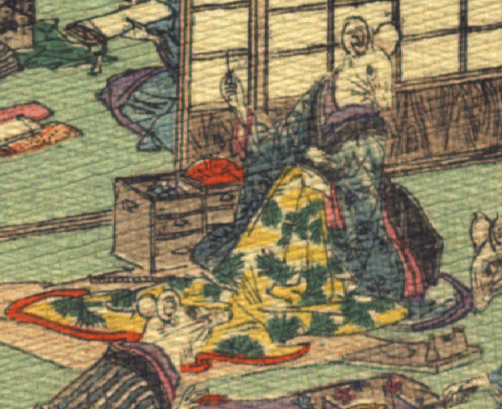

女の鼠。青色の着物をまとった鼠が、松の柄が入った黄色い着物を左手で持ち、右手に糸を通した針を持っている。手は人間のものである。脇に裁縫箱が置かれている。
著作者：J.Dautremer／出典：親書誌：U426_nichibunken_0111：Le mariage de la souris／日付：2006／資源識別子：U426_nichibunken_0111_0005_0002
Copyright (c)2010- International Research Center for Japanese Studies, Kyoto, Japan. All rights reserved.